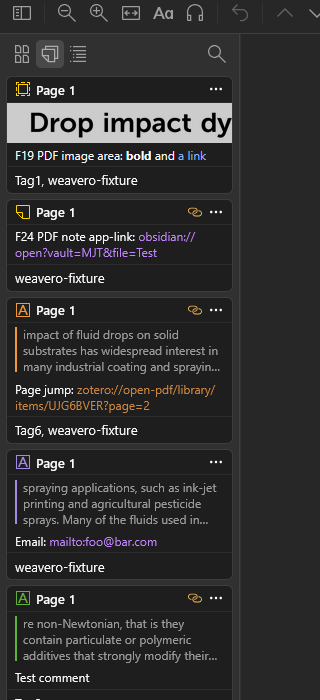
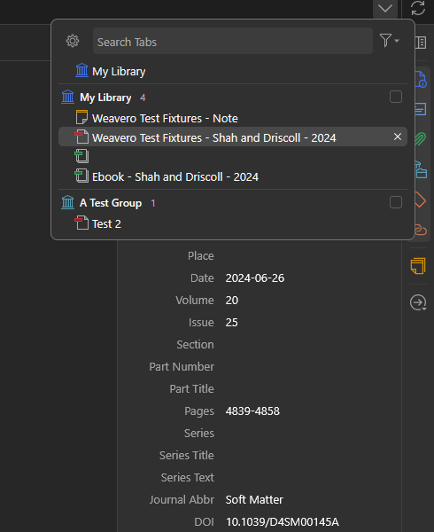
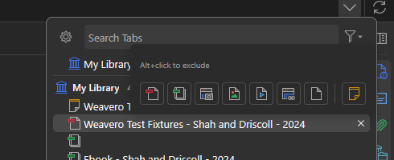
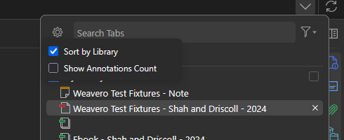
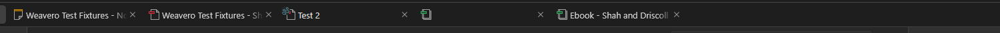
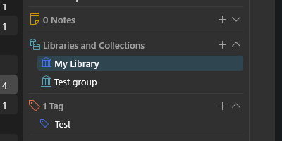
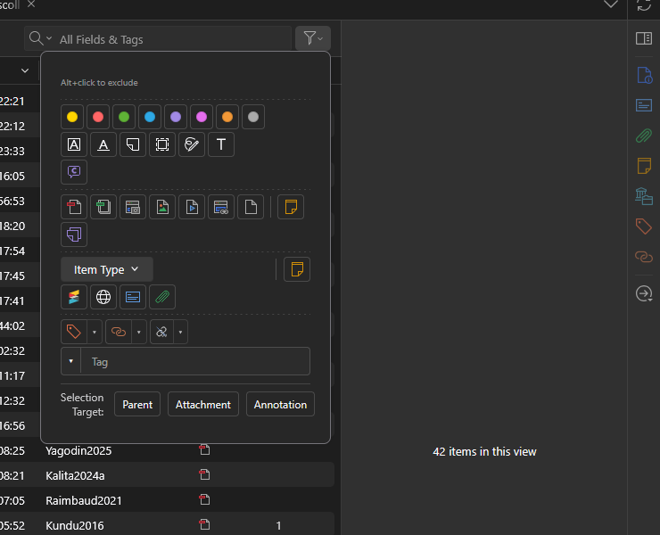
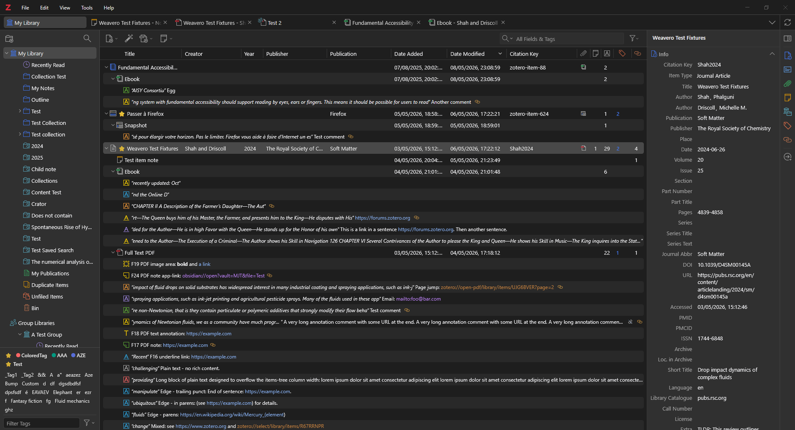

Draft preview of the README with proposed screenshots — please review the choice / order / cropping before they're committed to the actual README.md.
A Zotero 7+ plugin that turns URLs in annotation comments into clickable links and adds a fast filter pane, related-item plumbing, items-tree columns, and a complete tabs-menu overhaul on top of the standard library view.
Out of the box, https://, http://, and zotero:// links are recognised everywhere a comment is shown — items tree, right item pane, reader sidebar, in-PDF popup, link badges, and notes. Sixteen extra schemes (mailto:, obsidian://, vscode://, slack://, notion://, …) can be toggled per-scheme.

http(s), orange for zotero://, purple for app-scheme links (obsidian://, mailto:, …). Inline markdown — bold, italic, code, [label](url) — also renders.The "List all tabs" dropdown gets a structured layout — sections per library, per-library tickbox filter, file-type filter, and a settings popup.

Click the funnel button at the right of the search input. Same theme-aware attachment icons as the items-tree filter, plus a yellow Note tile after a vertical separator.

Alt+click hint / Clear / Clear and Close header as the items-tree filter.Click the gear button at the left of the search input.

Tabs whose item lives in a group library get a small "Group Libraries" cluster glyph in the top-left corner of the file-type icon (visible on Test 2 below). Hovering shows a custom tooltip with the tab title and a [icon] Library Name header (icon-bearing tooltips can't use the native title attribute).

When an item is replicated across libraries (linked items), the row matching the displayed item's library gets an accent background in the Libraries and Collections section.

Toolbar funnel button next to the search box opens the items-tree filter — annotation color/type/comment, attachment file types, item type, cross-level filters, multi-select Tag/Author/etc., and a Selection Target tri-state.

